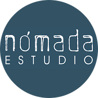

|  | José Luis AlmeidaProductor Multimedia y Blogguer. Fundador del sitio Nómada Estudio. Cuento con una larga experiencia en medios audiovisuales. Actualmente, también me desempeño como webmaster, editor, creador de contenidos digitales, consultor y diseñador de estrategias de visibilidad para sitios web de varias empresas. |
|
|